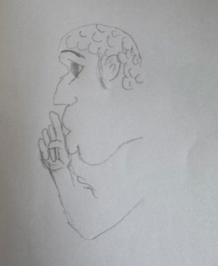

A survey conducted by the housing board in 1981 showed that 82.8% of the HDB flat residents felt safe leaving the flat unattended during the day. (Reference: The Straits Times, 1 Jun 1982)

31% of people surveyed by Institute of Policy Studies said that it was impossible for them to play a part in government policies.(Reference: The Business Times. 28 Nov 1998)